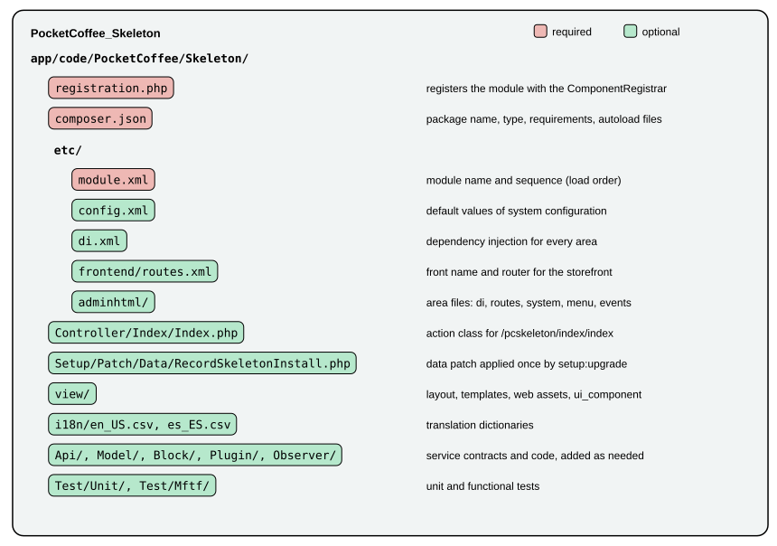

Module Anatomy
|
This content was generated with the assistance of AI and should be verified against the official documentation before being relied on in production. |
A Magento module is a directory with three required files and as many optional ones as the feature needs. The required
files tell the Framework that the module exists (registration.php), what it is called and which modules must load before it
(etc/module.xml) and how Composer should treat it (composer.json). Everything else, from a route to a database table,
is an optional file in a well-known place that the Framework discovers by name. This page builds the smallest useful
module of the Pocket Coffee shop, walks through every file and folder a module can have, then runs the commands that
enable, upgrade and verify it.
The page was written against Magento Open Source and Adobe Commerce 2.4.9 (generally available 2026-05-12) and Mage-OS
3.6.0 (2026-10-14, built on the 2.4.9 code base) and checked on 2026-10-27. All commands and outputs below come from a running
Mage-OS 3.6.0 installation in developer mode (PHP 8.5.12, MariaDB 11.8.9, OpenSearch 3.9.0, Valkey 9.1.3); the module
files were syntax-checked with php -l, validated against the Magento XSDs with xmllint, checked with the Magento2 PHP_CodeSniffer
standard and then enabled and exercised over HTTP. Installing the module through Composer from a package repository was not
run: the module lives in app/code, and the Composer behaviour described is read from the core packages' composer.json
files. Adobe Commerce as a Cloud Service (ACCS) accepts no PHP modules, so this page applies to Magento Open Source, Adobe
Commerce on-premises or on cloud infrastructure, and Mage-OS; see the
editions page.
The architecture around modules (areas, the request lifecycle, configuration files) is in the
architecture overview; the next page, on
dependency injection, explains the di.xml file that most modules contain.
Naming and location
A module name has the form Vendor_Module. The vendor and module parts each start with a capital letter and contain letters
and digits; the schema of module.xml enforces this regular expression:
[A-Z]+[A-Za-z0-9]{1,}_[A-Z]+[A-Z0-9a-z]{1,}PocketCoffee_Skeleton is valid, pocketcoffee_skeleton and Pocket_Coffee_Skeleton are not. The name is
case-sensitive and is used in config.php, in layout handles, in translation files and in error messages.
| Where | Path | Use it for |
|---|---|---|
|
Project code. Found by the glob list of |
Modules that belong to one shop. No Composer packaging needed. |
|
Composer packages. Loaded because |
Reusable extensions, the core modules and everything installed from a package repository. |
The Composer package name follows the module name in kebab case: Magento_Wishlist is magento/module-wishlist, and the
Mage-OS fork publishes the same code as mage-os/module-wishlist with magento/module-wishlist in its replace section.
The example module is PocketCoffee_Skeleton, package pocketcoffee/module-skeleton, in app/code/PocketCoffee/Skeleton.
The three required files
registration.php
<?php
declare(strict_types=1);
use Magento\Framework\Component\ComponentRegistrar;
ComponentRegistrar::register(ComponentRegistrar::MODULE, 'PocketCoffee_Skeleton', __DIR__);The call stores the module name and the directory of the module in a static registry. Nothing else about the module is read
from PHP at this point; the registry is how the Framework finds etc/module.xml and every other file later. The file is
included on every request, so it must stay a registration and nothing more. The first argument is a constant of
ComponentRegistrar (MODULE, THEME, LANGUAGE, LIBRARY, SETUP); the second is the exact name used in module.xml;
the third is the directory, almost always __DIR__.
etc/module.xml
<?xml version="1.0"?>
<config xmlns:xsi="http://www.w3.org/2001/XMLSchema-instance" xsi:noNamespaceSchemaLocation="urn:magento:framework:Module/etc/module.xsd">
<module name="PocketCoffee_Skeleton">
<sequence>
<module name="Magento_Catalog"/>
</sequence>
</module>
</config>This is the only required file in etc/. Its elements and attributes come from module.xsd:
| Element or attribute | Meaning |
|---|---|
|
Required. Must be identical to the name in |
|
Optional, digits and dots only ( |
|
Optional. The modules that must be loaded before this one. Controls the order in which |
|
The name of a module to load first. Names must be unique inside one |
sequence affects load order and therefore which of two competing configurations wins: a module that wants to override
what Magento_Catalog declares must be loaded after it, so it lists Magento_Catalog. The Framework sorts all modules by
name (those containing Magento_ first) and then moves each one after the modules in its sequence, transitively; a circular
sequence fails with Circular sequence reference from 'A' to 'B'.
sequence does not enable anything. Whether other modules may be disabled is decided by a different mechanism, which was
tried on the checked installation. With PocketCoffee_ArchProbe added to the sequence of PocketCoffee_Skeleton,
module:disable PocketCoffee_ArchProbe succeeded. After moving the dependency into the require section of the
Skeleton’s composer.json, the same command was refused:
$ bin/magento module:disable PocketCoffee_ArchProbe
No modules were changed.
Unable to change status of modules because of the following constraints:
Cannot disable PocketCoffee_ArchProbe because modules depend on it:
PocketCoffee_Skeleton: PocketCoffee_Skeleton->PocketCoffee_ArchProbeSo both declarations are needed and they have different jobs: sequence for load order, composer.json require for the
enable and disable dependency check. The same checker also reads the conflict section and answers Cannot enable X because
it conflicts with other modules: and Cannot enable X because it depends on disabled modules:.
composer.json
{
"name": "pocketcoffee/module-skeleton",
"description": "Smallest useful module for the Pocket Coffee roast calendar",
"type": "magento2-module",
"license": "proprietary",
"version": "1.0.0",
"require": {
"php": ">=8.1",
"magento/framework": "*",
"magento/module-catalog": "*"
},
"autoload": {
"files": ["registration.php"],
"psr-4": { "PocketCoffee\\Skeleton\\": "" }
}
}| Key | Role in a Magento module |
|---|---|
|
|
|
|
|
The PHP version and the packages the code needs. A dependency on |
|
|
|
The namespace root. An empty path maps |
|
The core packages set it explicitly. For a package published from Git, omit it and let the tag define the version. |
|
|
Everything optional
The folders and files below are discovered by convention. The counts say in how many of the 328 module-* packages of Mage-OS
3.6.0 each exists, which shows what is common and what is rare.

The etc/ directory
Files directly in etc/ apply to every area (the global scope); files in etc/<area>/ apply to that area only, with the
area folders frontend, adminhtml, graphql, webapi_rest, webapi_soap and crontab.
| File | Core modules | Purpose |
|---|---|---|
|
328 |
Declaration, see above. |
|
238 |
Preferences, plugins, virtual types, constructor arguments: Dependency injection. Also in |
|
119 |
Default values of system configuration: the lowest-priority source in the configuration chain. |
|
115 |
Fields shown in Stores > Configuration, with scopes, source models and backend models: Admin development. |
|
82 |
Declarative database schema and the generated whitelist: Declarative schema and patches. |
|
68 |
Admin permissions (resources) used by menus, controllers and API routes. |
|
46 |
GraphQL schema types and queries: REST and GraphQL APIs. |
|
43 |
Observers per event; also per area ( |
|
42, 71 |
Front names and routers for controllers: Routing and controllers. |
|
40 |
Extension attributes added to data interfaces: Service contracts. |
|
38 |
Admin menu entries. |
|
32 |
REST routes bound to service interfaces. |
|
30, 4 |
Scheduled jobs and groups: CLI, cron and message queues. |
|
16 |
Transactional email templates the Admin can choose. |
|
16 |
Content Security Policy allowances: Security. |
|
14 |
Message queue topics, consumers and exchanges. |
|
17, 14 |
Layout handles for page types and customer-data sections invalidated by actions. |
|
8, 8 |
Indexers and the materialized-view subscriptions that keep them current: Caching, indexing and performance. |
|
8 |
Custom cache types. |
|
1 to 9 |
Feature-specific declarations of the modules that own those features. |
PHP folders
| Folder | Core modules | Typical content |
|---|---|---|
|
|
Service contract interfaces and data interfaces (the stable public API). |
|
many |
Presentation classes behind templates. Newer code prefers |
|
|
Action classes. Admin actions live under |
|
most |
Implementations, entities, resource models and collections. |
|
83 |
Classes registered in |
|
136 |
Classes registered as plugins in |
|
64 |
Legacy utility classes. New code uses injected services instead. |
|
27 |
Console commands registered through |
|
17 |
Classes run by |
|
13 |
Private-content sections served to the storefront without a full page reload. |
|
51 |
UI component data providers, column and action classes. |
|
58, 8 |
Data and schema patches run by |
|
186, 177 |
PHPUnit and Magento Functional Testing Framework tests. |
None of the 328 core modules still contains InstallSchema, UpgradeSchema, InstallData or UpgradeData, the scripts
described in the 2016 books.
The view/ directory
view/ is split by area: view/frontend/ (90 modules), view/adminhtml/ (101), and view/base/ (29) for files that apply to
both. Inside an area folder:
| Path | Content |
|---|---|
|
Layout updates named after a layout handle ( |
|
PHP templates, rendered by blocks. |
|
Static assets: JavaScript, CSS or LESS, images, fonts, and |
|
RequireJS mappings, merged from all modules. |
|
Grids, forms and other UI components of the Admin (and storefront). |
|
Transactional email templates. |
|
Page layouts such as |
The next pages explain these files in detail; the point here is that a module needs none of them until it uses the feature.
The Skeleton module in full
The module that the examples below enable has seven files besides registration.php, module.xml and composer.json shown above.
<?xml version="1.0"?>
<config xmlns:xsi="http://www.w3.org/2001/XMLSchema-instance" xsi:noNamespaceSchemaLocation="urn:magento:module:Magento_Store:etc/config.xsd">
<default>
<pocketcoffee_skeleton>
<general>
<enabled>1</enabled>
<min_rest_days>4</min_rest_days>
</general>
</pocketcoffee_skeleton>
</default>
</config>etc/config.xml follows the structure section/group/field of system configuration. The schema comes from Magento_Store
through the module URN form. The values are defaults for the default scope; websites and stores inherit them.
<?xml version="1.0"?>
<config xmlns:xsi="http://www.w3.org/2001/XMLSchema-instance" xsi:noNamespaceSchemaLocation="urn:magento:framework:App/etc/routes.xsd">
<router id="standard">
<route id="pcskeleton" frontName="pcskeleton">
<module name="PocketCoffee_Skeleton"/>
</route>
</router>
</config>etc/frontend/routes.xml assigns the front name pcskeleton to the module on the standard router. A URL
/pcskeleton/index/index is then handled by PocketCoffee\Skeleton\Controller\Index\Index.
<?php
declare(strict_types=1);
namespace PocketCoffee\Skeleton\Controller\Index;
use Magento\Framework\App\Action\HttpGetActionInterface;
use Magento\Framework\App\Config\ScopeConfigInterface;
use Magento\Framework\Controller\Result\Raw;
use Magento\Framework\Controller\Result\RawFactory;
use Magento\Store\Model\ScopeInterface;
/**
* GET /pcskeleton/index/index
*/
class Index implements HttpGetActionInterface
{
private const XML_PATH_MIN_REST_DAYS = 'pocketcoffee_skeleton/general/min_rest_days';
/**
* @param RawFactory $rawFactory
* @param ScopeConfigInterface $scopeConfig
*/
public function __construct(
private readonly RawFactory $rawFactory,
private readonly ScopeConfigInterface $scopeConfig
) {
}
/**
* @inheritDoc
*/
public function execute(): Raw
{
$days = (int) $this->scopeConfig->getValue(self::XML_PATH_MIN_REST_DAYS, ScopeInterface::SCOPE_STORE);
return $this->rawFactory->create()->setContents(
sprintf('Pocket Coffee beans rest at least %d days after roasting.', $days)
);
}
}The controller implements HttpGetActionInterface, which declares it as a GET action; the request validation of the front
controller checks the HTTP method against these marker interfaces before execute() runs. It receives its collaborators through the constructor and creates the response with a generated
factory, RawFactory.
<?php
declare(strict_types=1);
namespace PocketCoffee\Skeleton\Setup\Patch\Data;
use Magento\Framework\Setup\ModuleDataSetupInterface;
use Magento\Framework\Setup\Patch\DataPatchInterface;
/**
* Runs once per database: setup:upgrade records it in the patch_list table.
*/
class RecordSkeletonInstall implements DataPatchInterface
{
/**
* @param ModuleDataSetupInterface $moduleDataSetup
*/
public function __construct(private readonly ModuleDataSetupInterface $moduleDataSetup)
{
}
/**
* @inheritDoc
*/
public function apply(): self
{
$connection = $this->moduleDataSetup->getConnection();
$connection->startSetup();
$connection->insertOnDuplicate(
$this->moduleDataSetup->getTable('core_config_data'),
[
'scope' => 'default',
'scope_id' => 0,
'path' => 'pocketcoffee_skeleton/general/seeded',
'value' => '1',
],
['value']
);
$connection->endSetup();
return $this;
}
/**
* @inheritDoc
*/
public static function getDependencies(): array
{
return [];
}
/**
* @inheritDoc
*/
public function getAliases(): array
{
return [];
}
}The patch is the smallest way to make setup:upgrade do visible work. The DataPatchInterface has three methods: apply(),
the static getDependencies() (patches that must run first) and getAliases() (former class names, so a renamed patch does
not run twice). The details are in the
declarative schema and patches page.
"Roast date","Roast date"
"Beans rest at least %1 days after roasting.","Beans rest at least %1 days after roasting."i18n/en_US.csv holds the source phrases; i18n/es_ES.csv has the same keys with Spanish values ("Roast date","Fecha de
tueste"), which is how Pocket Coffee’s second language is served.
Enable, upgrade, verify
Files in app/code are not active. The Framework knows the module (the registry found it) but app/etc/config.php lists it
as absent, so it is treated as disabled:
$ bin/magento module:status PocketCoffee_Skeleton
PocketCoffee_Skeleton : Module is disabledEnabling and upgrading is a two-command procedure, with a status check in between that shows why the second command is needed. The outputs below were produced in this order:
$ bin/magento module:enable PocketCoffee_Skeleton
The following modules have been enabled:
- PocketCoffee_Skeleton
To make sure that the enabled modules are properly registered, run 'setup:upgrade'.
Cache cleared successfully.
Generated classes cleared successfully. Please run the 'setup:di:compile' command to generate classes.
Info: Some modules might require static view files to be cleared. To do this, run 'module:enable' with the --clear-static-content option to clear them.
$ bin/magento setup:db:status
...
Run 'setup:upgrade' to update your DB schema and data.
$ echo $?
2
$ bin/magento setup:upgrade
...
Data install/update:
Data post-updates:
Running data recurring...
...
Upgrade completed successfully.
$ bin/magento setup:db:status
...
All modules are up to date.
$ echo $?
0
$ bin/magento module:status PocketCoffee_Skeleton
PocketCoffee_Skeleton : Module is enabledWhat each step did:
-
module:enableadded'PocketCoffee_Skeleton' => 1to themodulesarray ofapp/etc/config.php, cleaned the cache types and deleted the generated code. It refuses to enable a module whose dependencies are disabled unless--forceis given.--allenables every module,-c(--clear-static-content) also clears generated static files.module:disabledoes the opposite and honours the same dependency rules. -
setup:db:statuscompares the database with the code and exits with a non-zero code when an upgrade is pending (here 2). Its checks are the declarative schema, schema patches, data patches and the legacy version check. -
setup:upgradeapplies the declarative schema, runs schema patches, data patches and recurring scripts of every enabled module, imports the shared configuration fromconfig.php(the output lineNothing to import.comes from it), and clears caches. Options:--keep-generatedkeeps generated code (use it in production deployments after a compile),--dry-runshows what would run,--safe-modeand--data-restoreback up and restore data around destructive schema changes,--convert-old-scriptsconverts legacyInstallSchemascripts todb_schema.xml.
The effects are visible in the database, in the configuration file and over HTTP:
$ grep -n "PocketCoffee_Skeleton" app/etc/config.php
348: 'PocketCoffee_Skeleton' => 1,
$ mariadb magento -e "select patch_name from patch_list where patch_name like '%Skeleton%'"
PocketCoffee\\Skeleton\\Setup\\Patch\\Data\\RecordSkeletonInstall
$ mariadb magento -e "select scope,scope_id,path,value from core_config_data where path like 'pocketcoffee_skeleton%'"
default 0 pocketcoffee_skeleton/general/seeded 1
$ mariadb magento -e "select * from setup_module where module like 'Pocket%'"
(no rows)
$ curl -s http://localhost:8082/pcskeleton/index/index
Pocket Coffee beans rest at least 4 days after roasting.The patch_list row is what makes the patch run once. The empty setup_module result confirms that a module without
setup_version is invisible to the legacy version tables. The response contains the 4 of config.xml because no
database value overrides it. On the checked installation bin/magento config:show printed The "pocketcoffee_skeleton/general/min_rest_days" path doesn't exist
for these two paths, because they are not declared as fields in a system.xml; the HTTP response above is the proof that
the value is readable through ScopeConfigInterface.
Removing a module
bin/magento module:uninstall Vendor_Module removes modules that were installed with Composer: it enables maintenance mode,
can back up code, media and database (--backup-code, --backup-media, --backup-db), can delete the module’s data
(-r, --remove-data, which runs the module’s uninstall scripts) and runs composer remove. A --non-composer flag exists
for modules outside Composer. It was not run on the shared installation because it takes the whole store into maintenance
mode. For a module in app/code, the usual route is module:disable, then deleting the directory and, if needed, cleaning
the data the module created by hand, since app/code modules have no uninstall script.
Checking a module before it ships
Three checks cost seconds and catch most mistakes before a request does:
# PHP syntax of every file
$ find app/code/PocketCoffee/Skeleton -name '*.php' | xargs -n1 php -l
No syntax errors detected in app/code/PocketCoffee/Skeleton/registration.php
...
# XML against the Magento schemas (the urn: catalog resolves the schema names)
$ export XML_CATALOG_FILES=/tmp/urn-catalog.xml
$ xmllint --noout --schema vendor/mage-os/framework/Module/etc/module.xsd app/code/PocketCoffee/Skeleton/etc/module.xml
app/code/PocketCoffee/Skeleton/etc/module.xml validates
# The Magento coding standard
$ vendor/bin/phpcs --standard=Magento2 --severity=1 --extensions=php,xml,json app/code/PocketCoffee/Skeleton
FILE: .../PocketCoffee/Skeleton/etc/module.xml
FOUND 0 ERRORS AND 1 WARNING AFFECTING 1 LINE
2 | WARNING | Line exceeds 120 characters; contains 138 characters
(the same single warning for config.xml and frontend/routes.xml, no other findings)The urn:magento:... names in xsi:noNamespaceSchemaLocation are not URLs; an IDE or xmllint needs a catalog that maps
them to the XSD files in vendor/. bin/magento dev:urn-catalog:generate .idea/misc.xml writes that catalog for PhpStorm; it is not a
catalog xmllint can read, so the example uses a hand-written XML catalog with the same mappings. (In Adobe’s distribution the
framework path is vendor/magento/framework/....) The Magento2 standard reports the long xsi:noNamespaceSchemaLocation line
of every XML header as a warning; it is expected and can be ignored. phpcs and phpstan come with the development
dependencies of the project. More on the quality tooling is in the
testing page.
Failure modes
| Symptom | Cause | Fix |
|---|---|---|
|
The module is registered but not in the |
|
After enabling, the storefront shows the message |
The module declares a |
|
A console command breaks after changing a constructor: |
The generated |
Delete |
|
Console commands are built on every run; a command whose constructor cannot be satisfied stops the whole application. |
Fix the |
|
A module in |
Enable the dependency first, or use |
|
Two modules list each other in |
Remove one side; use an event, a plugin or a service contract to break the dependency. |
Overrides in |
The module loads before the one it overrides. |
Add the other module to |
Two failures were not exercised, because they would break the shared store: a mismatch between the name in registration.php
and in module.xml, and a missing registration.php. The Framework reads module names from module.xml and finds the
directory through the registry, so either mistake leaves the module unloaded or misconfigured, and the fix is always to make
the three declarations agree.
The 2016 books
The books of 2016 describe Magento 2.0 and 2.1. They teach the same module skeleton, registration.php, module.xml and
composer.json, and the module:enable and setup:upgrade pair works as shown above. What differs is the data layer and the
tooling around it: Magento 2 Cookbook uses InstallSchema scripts and the Web Setup Wizard, and Magento 2 DIY the Setup
Wizard and Magento Connect. Declarative schema (db_schema.xml) and patches replaced the version-driven scripts, and none
of the 328 modules of Mage-OS 3.6.0 contains an InstallSchema or InstallData class. The Web Setup Wizard and Magento Connect no
longer exist; Composer is the only installer for packages.
Pocket Coffee thread
PocketCoffee_Skeleton is the seed of the module that adds the roast date badge. Over the next pages it gains:
-
a
Modeland anApi/interface for the roast date, injected throughdi.xml; -
an
etc/events.xmlentry and anObserver/class for the order log, registered globally so the storefront, the Admin and the REST API are covered; -
a
view/frontend/layout/catalog_product_view.xml, aViewModel/and a.phtmltemplate for the badge; -
a data patch that creates the
roast_dateattribute instead of the placeholder seed written above; -
a
webapi.xmlroute and an extension attribute that expose the date to REST and GraphQL clients.
Each addition is a file from the lists above; the module’s three required files do not change.
References
-
Adobe Commerce developer documentation: Register your component
-
Adobe Commerce developer documentation: Module file structure
-
Adobe Commerce developer documentation: Data and schema patches
-
Adobe Commerce developer documentation: Required configuration files
-
Adobe Commerce developer documentation: Composer integration
-
Adobe Commerce developer documentation: XML schema validation
-
Fernando J. Miguel, Magento 2 Development Essentials, Packt, 2016 (Magento 2.0; read as historical context)
-
Ray Bogman and Vladimir Kerkhoff, Magento 2 Cookbook, Packt, 2016 (Magento 2.0, PHP 7.0; read as historical context)